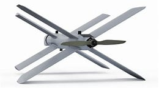
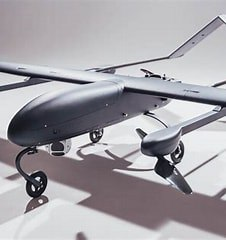
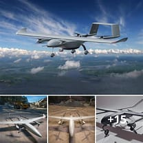
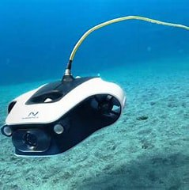

What is a drone? A drone is an unmanned aircraft. Drones are more formally known as unmanned aerial vehicles (UAVs) or unmanned aircraft systems. Essentially, a drone is a flying robot that can be remotely controlled or fly autonomously using software-controlled flight plans in its embedded systems, that work in conjunction with onboard sensors and a global positioning system (GPS). UAVs were most often associated with the military. They were initially used for anti-aircraft target practice, intelligence gathering and, more controversially, as weapons platforms. Drones are now also used in a range of civilian roles, including the following: search and rescue surveillance traffic monitoring weather monitoring firefighting personal use drone-based photography videography agriculture delivery services How do drones work? Drones have two basic functions: flight mode and navigation. To fly, drones must have a power source, such as battery or fuel. They also have rotors, propellers and a frame. The frame of a drone is typically made of a lightweight, composite material to reduce weight and increase maneuverability. Drones require a controller, which lets the operator use remote controls to launch, navigate and land the aircraft. Controllers communicate with the drone using radio waves, such as Wi-Fi. What are common drone features and components? Drones have a large number of components, including: electronic speed controllers, which control a motor's speed and direction; flight controller;GPS module;battery;antenna;receiver;cameras;sensors, including ultrasonic sensors and collision avoidance sensors; accelerometer, which measures speed; and altimeter, which measures altitude. Drone features vary based on the use it is put to. Examples of features include: various types of cameras with high-performance, zoom and gimbal steadycam and tilt capabilities; artificial intelligence (AI) that enables the drone to follow objects; augmented reality features that superimpose virtual objects on the drone's camera feed; media storage format;maximum flight time, which determines how long the drone can remain in the air; maximum speeds, including ascent and descent; hover accuracy;obstacle sensory range;altitude hold, which keeps the drone at a fixed altitude; live video feed; and flight logs.
| Type | Illustrative image |
|---|---|
| Rotary blade drones |  |
| Fixed Wing drones |  |
| Fixed Wing Hybrid Vertical Take-off and Landing drones (VTOL) |  |
| Underwater drones |  |